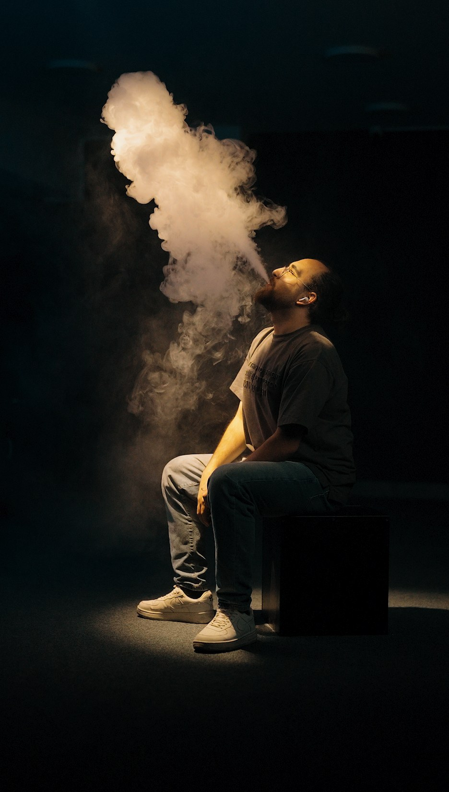
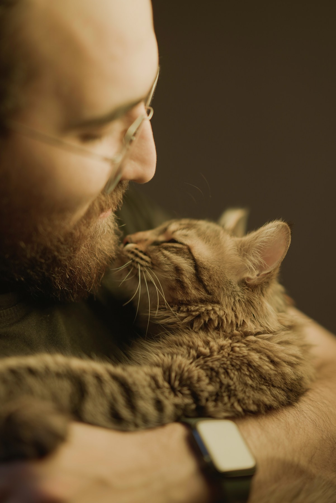
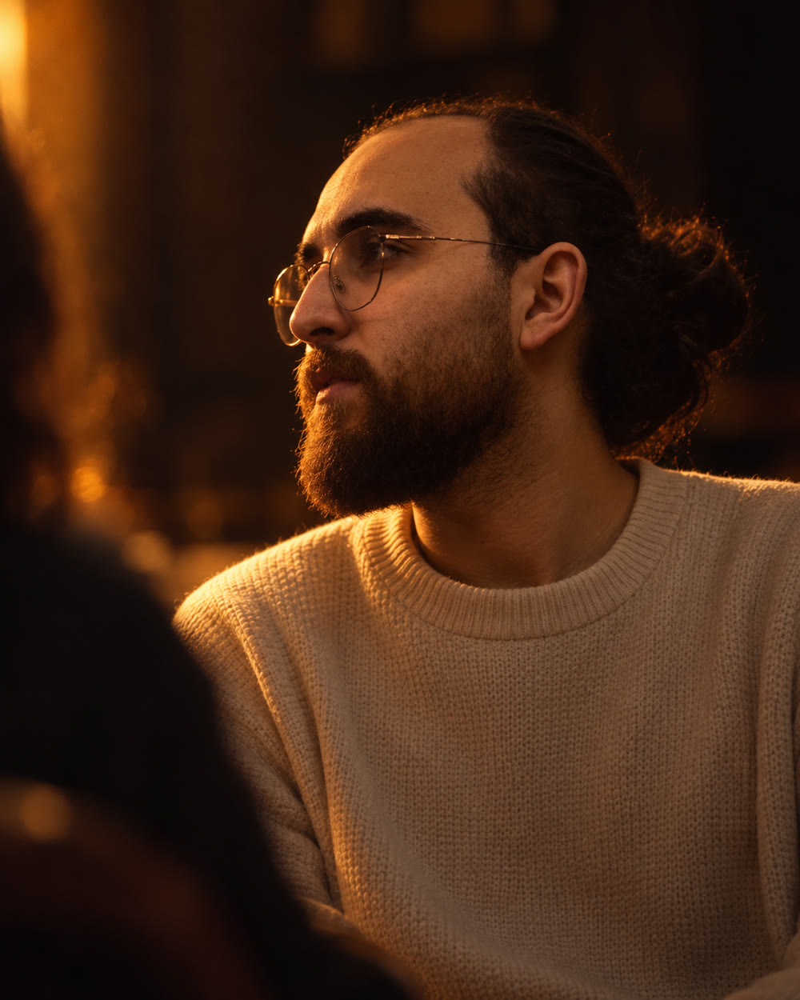

AN INDEPENDENT MOTION STUDY · 01
FRAMESIN MOTION.
Every frame has a story. Find the one that pulls you in.
01 / THE LIVING ARCHIVEMOVE ACROSS THE FRAMESSWIPE TO EXPLORE
01/ 07
CINEMATOGRAPHY / DIRECTION / COLORKEEP EXPLORING ↓
02 / LIFE BETWEEN THE TAKES
BEHIND the frame.
The people, the pauses, the small moments that stay.



SCROLL TO UNFOLD